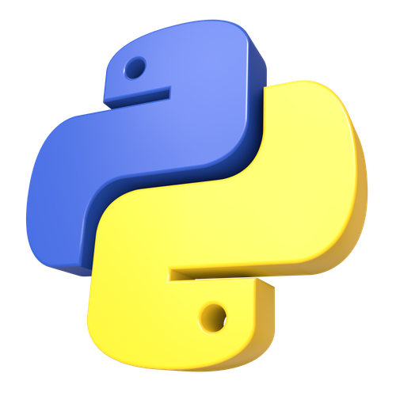
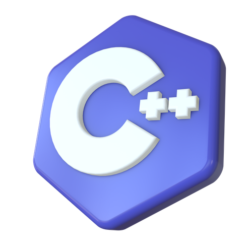
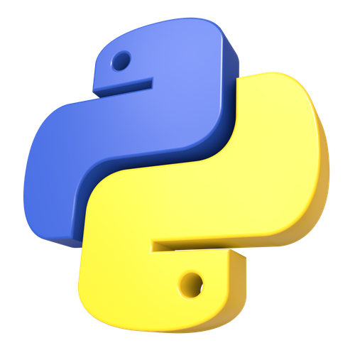
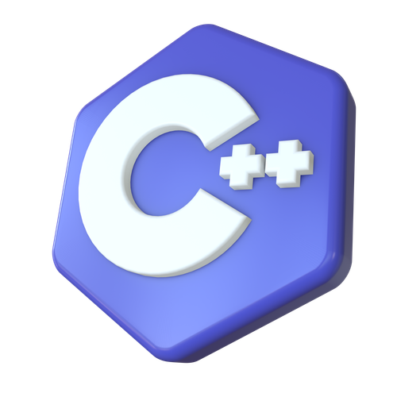

Competências
Hi, again!
Bom, como estou finalizando o primeiro período do bacharelado em Ciência da Computação, desenvolvi uma lista de competências e habilidades importantes que foram requisitadas ao longo do período.
Competências desenvolvidas no 1º período
- Lógica e raciocínio computacional: resolução estruturada de problemas e criação de algoritmos simples.
- Programação básica: uso de variáveis, condições, funções e loops.
- Estruturas de dados iniciais: listas, vetores e matrizes.
- Fundamentos de computação e hardware: interação entre software, sistema operacional e componentes físicos.
- Matemática aplicada à computação: lógica, funções e álgebra fundamental.
- Desenvolvimento de projetos: programação individual e em equipe.
- Documentação técnica: explicar raciocínios e registrar processos.
- Arduino – Conceitos de eletrônica e programação embarcada.
Além disso, busquei adquirir conhecimentos por conta própria e expandir minhas habilidades por meio de cursos complementares.
Cursos complementares
- C Essentials I – Introdução à linguagem C (CISCO – 60h).
- Fundamentos de Hardware – Montagem, desmontagem e diagnóstico de computadores.
- Python Essentials 1 – Fundamentos da linguagem Python.
- Imersão Dados – Python aplicado a análise de dados (Alura + Google).
- JavaScript Essentials I – Primeiros passos no desenvolvimento web.
Lingagens preferidas
 



Com certeza essa gama de conhecimento não parará por aí, tenho muitos planos e objetivos que pretendo colocá-los em prática.